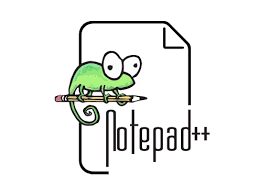
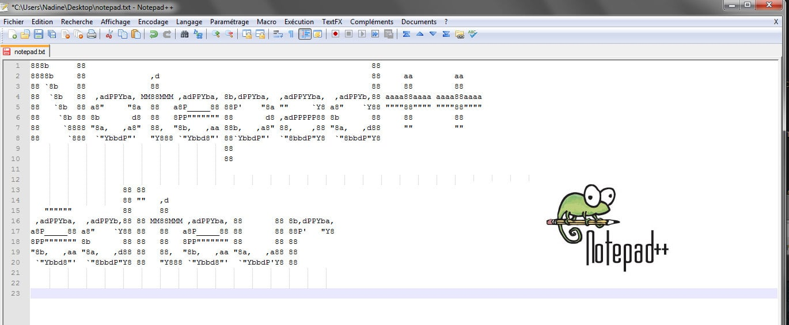
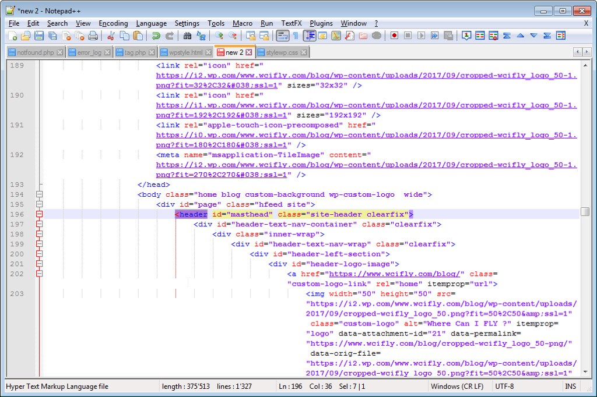

Fiche d'identité
Développé par : Don Ho
Première version :24 novembre 2003
Dernière version: 6 mars 2020
Écrit en : C++ et C

Les avantages

Open Source et Gratuit
Carctéristique par défaut solides
Interface utilisateur vraiment personnalisable
Les points négatifs

Design un peu dépassé
La gestion des plugins a améliorer



Qu'est ce qu'on s'amuse !
une capture d'écran illustrant le logiciel